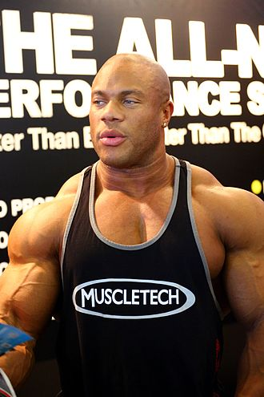

Phillip Jerrod Heath (born December 18, 1979) is an American IFBB professional bodybuilder.
He is a seven-time Mr. Olympia winner, having won the competition every year from 2011 to
2017. His latest victory tied him with Arnold Schwarzenegger for the joint-second number
of all-time Mr. Olympia wins, behind Ronnie Coleman and Lee Haney, who are joint-first
with eight wins each. His physique is considered one of the best and well balanced
bodybuilding physiques of all time. Phillip Jerrod Heath was born in Seattle, Washington, on
December 18, 1979. He attended Rainier Beach High School in Seattle, where he was team
captain and shooting guard on the varsity basketball team. He attended the University
of Denver on an athletic scholarship, majoring in business administration while playing
shooting guard for the university's Division I basketball team. Heath entered bodybuilding
in 2002. In 2005, he won the overall title at the NPC (National Physique Committee)
USA Championships, earning the right to compete as an IFBB Pro. He won his first two
IFBB professional events the following year: The Colorado Pro Championships and The
New York Pro Championship. In 2007, Heath placed fifth at the Arnold Classic.
Although he still qualified to compete in the 2007 Mr. Olympia contest, Heath,
nevertheless, decided not to enter the contest, stating that he needed additional
time to improve his form. Heath won the 2008 Iron Man show and placed second to
Dexter Jackson at the 2008 Arnold Classic. In his 2008 Mr. Olympia debut, Heath
finished third to become the first novice to place in the top three since Flex
Wheeler in 1993. He claimed the fifth position at the 2009 Mr. Olympia title and
second place at the 2010 event. He gained the crown in 2011. Heath defended the
title of Mr Olympia consecutively six times since then until 2018 when he placed
second to Shawn Rhoden.
